A gratitude journal for people who've quit gratitude journals
Three good things. That's the whole app.
About ninety seconds before bed. A companion asks what went well today, you answer, and a little plant in your garden grows. Miss a day and nothing happens. No streaks. No guilt.
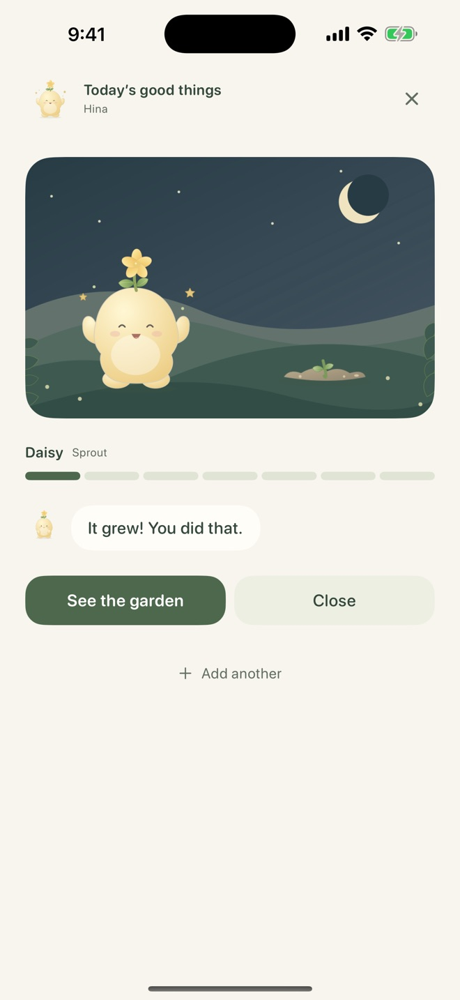
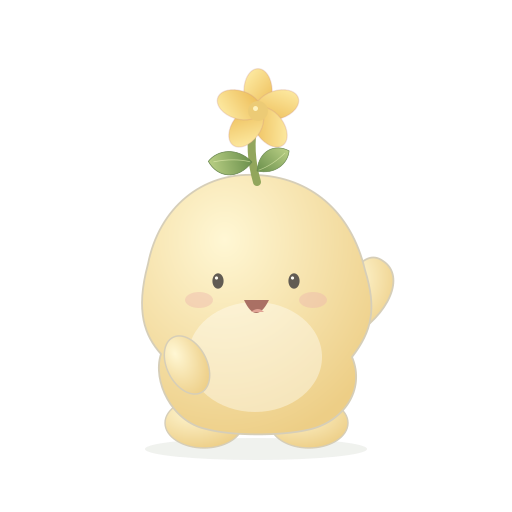
How a night goes
You never stare at a blank page.
Open the app and the question is already there. Answer once, twice, three times if you have them. Then put your phone down.
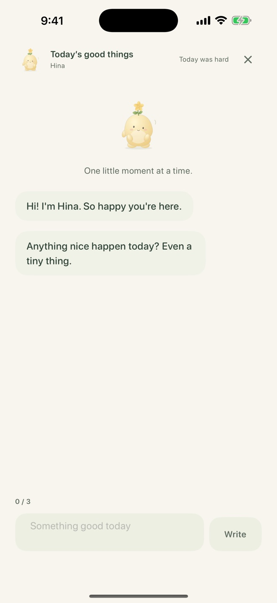
Hina asks first.
The first thing on screen is a question, not an empty box. Your companion asks for one good thing, then the next.
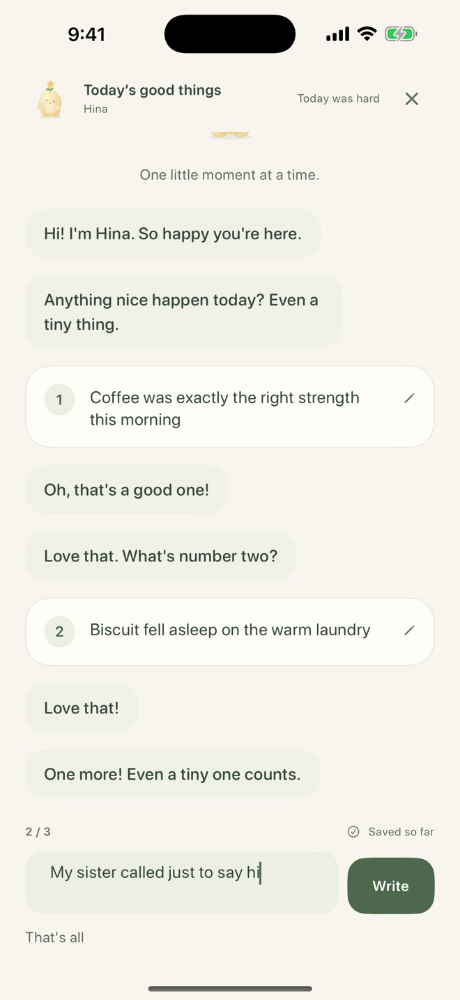
Answer in a sentence.
Coffee that was exactly right. The cat on the warm laundry. Your sister calling for no reason. One is plenty. Three is the habit.
Watch it grow.
Every day you write, your plant grows one stage, right in front of you. Hina says so. Then you're done until tomorrow.
Afterward there's one optional tap: how do you feel? Five faces and a Skip button. Your companion answers either way.
For the days you'd rather not write
There's a button for hard days.
Tap “Today was hard” and Hina closes her eyes and sits with you. No entry needed. Nothing is taken away.
- Your plant never wilts, never dies, never resets.
- A day you skipped is a soft gray dot on the calendar. Not red, not an X.
- There is no streak counter anywhere in the app. Seven entries, whenever they happen, is what makes a plant bloom.
“Welcome back. Start where you are.”
The whole greeting after a few days away. It doesn't count the days.
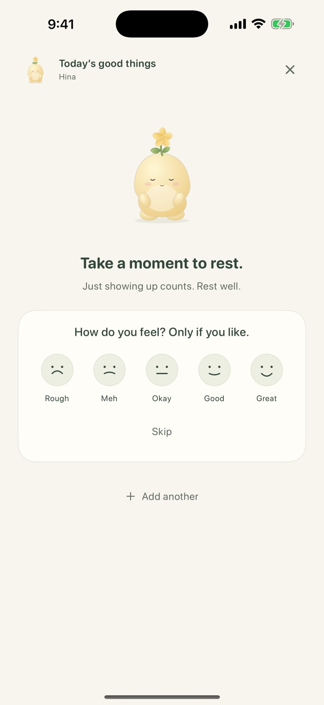
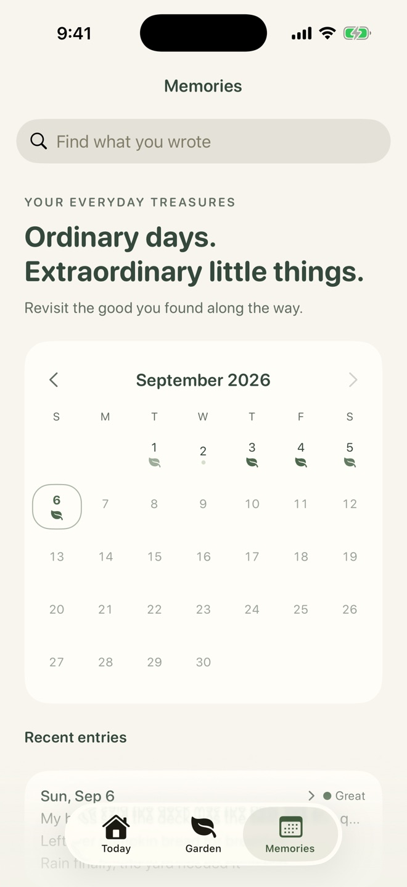
The garden
Seven entries. Not seven days in a row.
Write seven times, whenever they happen, and your plant blooms. Everything you wrote along the way becomes a harvest card in your garden. By winter, the garden looks like your year.
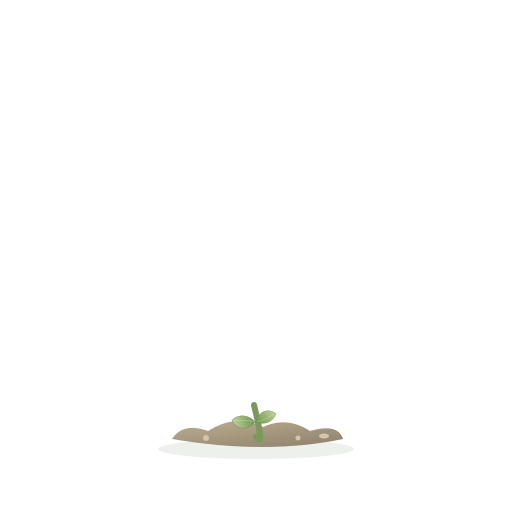
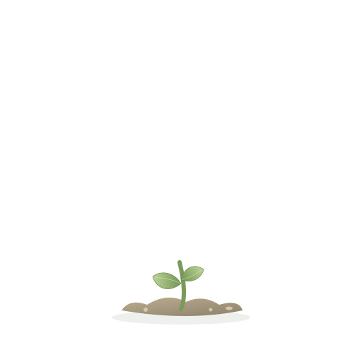
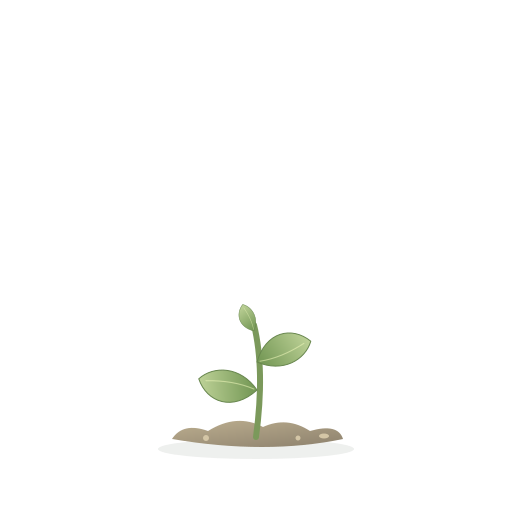
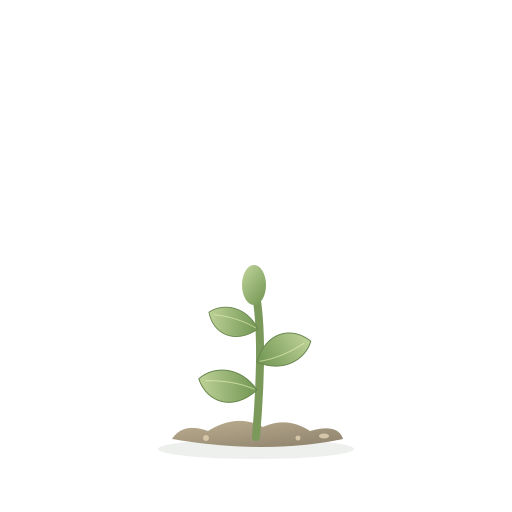
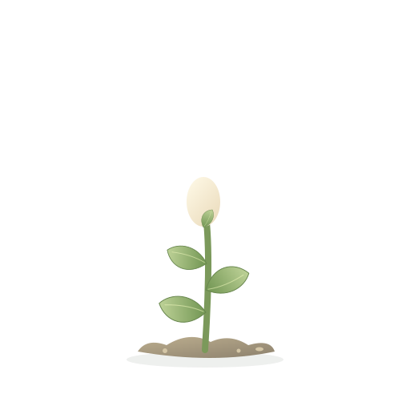
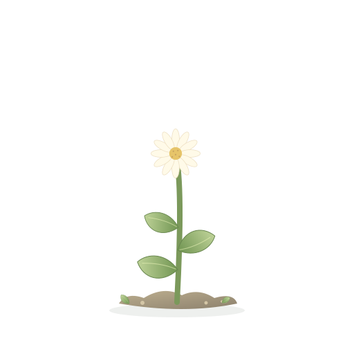
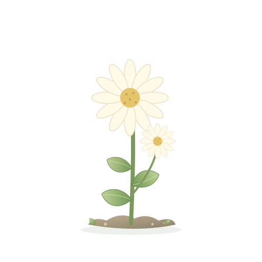
Nine kinds, picked by season. You never grow the same one twice in a row.
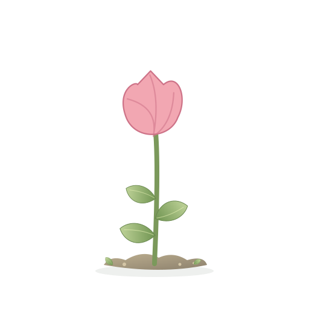
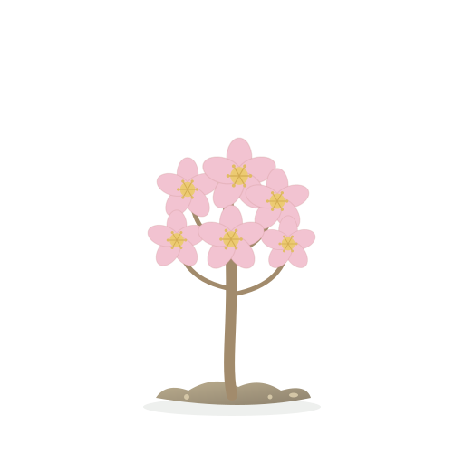
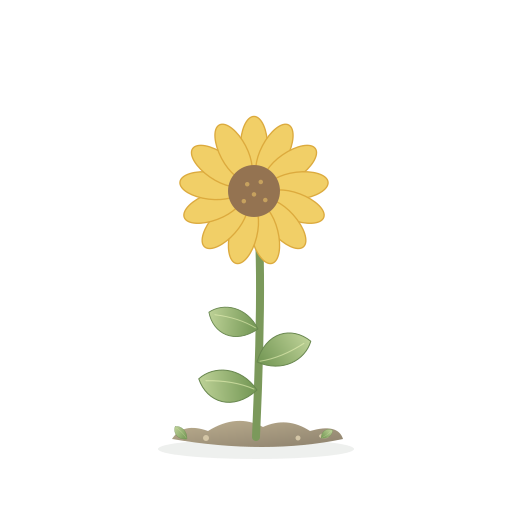
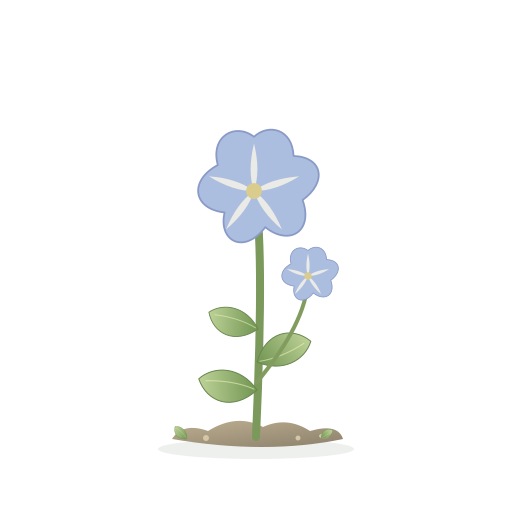
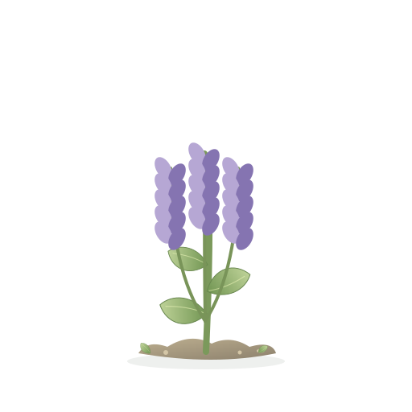
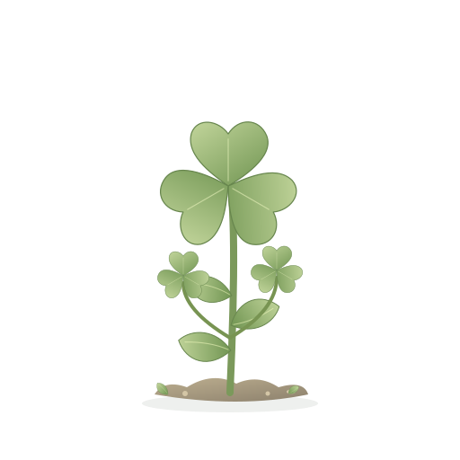
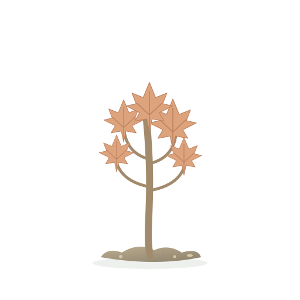
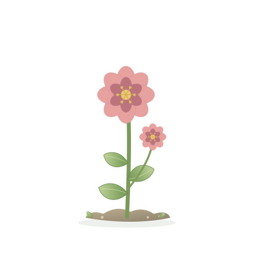
Look back surfaces a good thing from weeks ago. The kind you'd already forgotten.
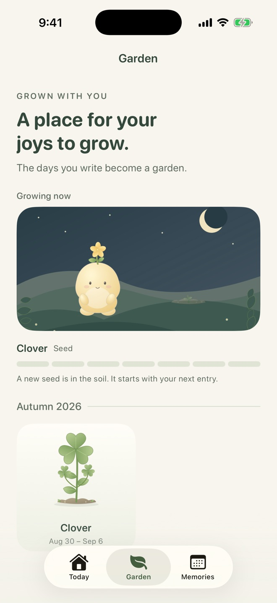
Companions
Pick who you write with.
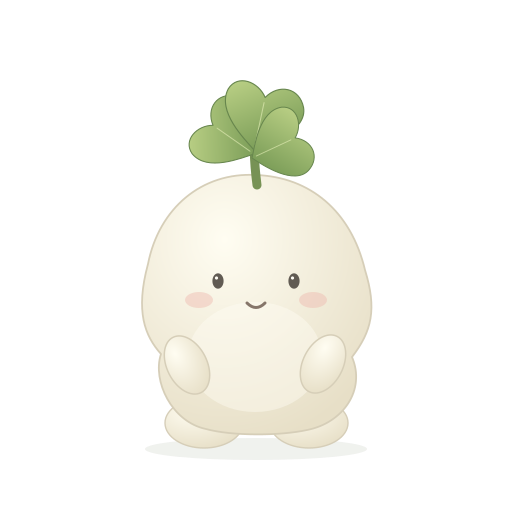
Mitsu
Gentle and easygoing
Something small is fine. Let's start with one.
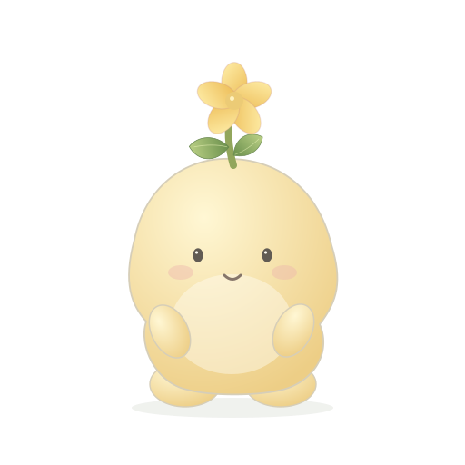
Hina
Bright and warm
Anything nice happen today? Even a tiny thing.
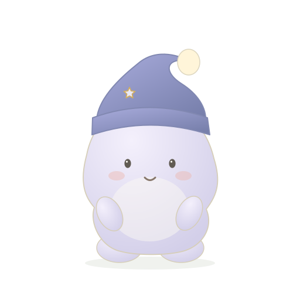
Yoru
Quiet and reassuring
One thing from today. Take your time.
Every companion goes at your pace. Switch any time in Settings.
Private by design
What you write never leaves your iPhone.
Mitsuba makes no network requests at all. There is nothing to sign up for, nothing to sync, and nothing for anyone else to read.
- No account, no sign-upOpen the app and start writing. That's the whole onboarding.
- Works in airplane modeEvery feature works offline, because none of them need the internet.
- No ads, no analytics, no trackingNot a single third-party SDK. The developer can't see your entries either.
- Export or delete any timeSave everything as plain text or JSON, or delete it all in two taps.
Questions
Small print, in plain words.
Is it free?
Yes. Mitsuba is free to download, with no ads.
What happens if I miss a day?
Nothing. The plant never goes backwards and never dies. The next day you write, it grows one more step.
Do I have to write three things?
No. One is enough for the day to count and the plant to grow. There's a “That's all” button after every entry.
Where is what I write stored?
Only on your iPhone. The app makes no network requests, so nothing is ever sent anywhere.
Can I move my entries to a new phone?
Not automatically in this version. Use Settings, then “Export as JSON” to keep a copy.
Which languages does it support?
English, 日本語, 한국어 and 繁體中文. It follows your iPhone's language, and you can change it in Settings.
Which iPhones does it run on?
Any iPhone running iOS 17 or later.
Something else? Write to sh.hirokawa@icloud.com or see the support page.
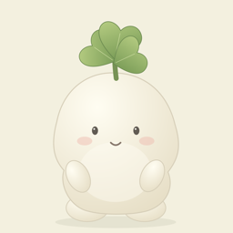
Tonight, before bed. Ninety seconds.
Three small things that went well. That's all it asks.
Download on the App Store iPhone · iOS 17 or later · Free